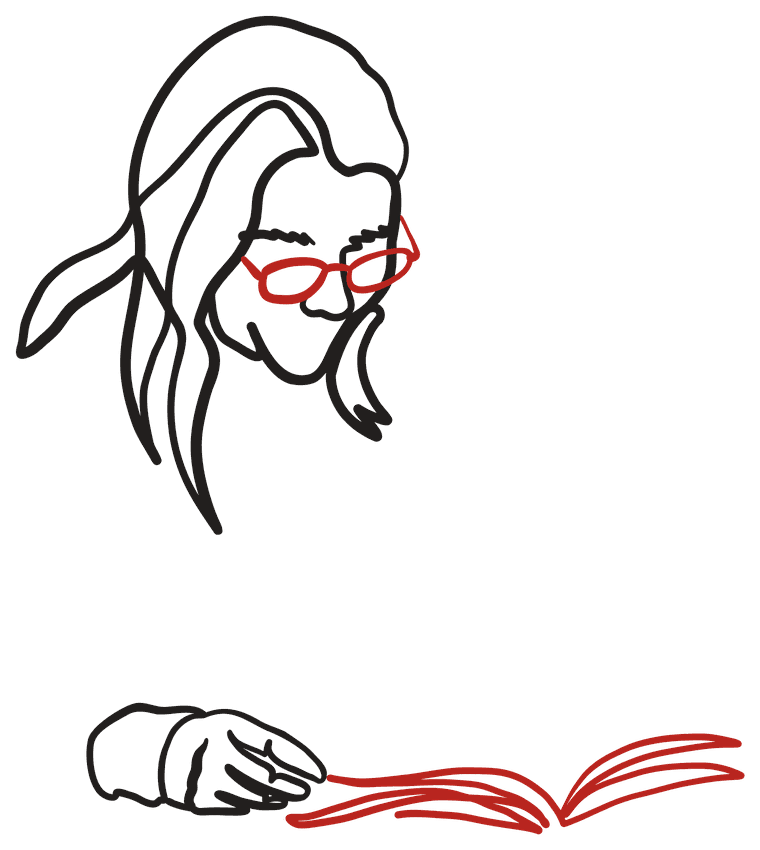

About

I am a PhD student in number theory at the Institute of Science and Technology Austria (ISTA), where I am part of the Browning group.
Education
- PhD student
- ISTA, Klosterneuburg
Supervised by Tim Browning - Master’s degree
- University of Göttingen
Thesis: On the number of integral points on Markov-type cubic surfaces, supervised by Florian Wilsch - Bachelor’s degree
- University of Bologna
Thesis: On Gauss’ class number one problem, supervised by Fabrizio Caselli